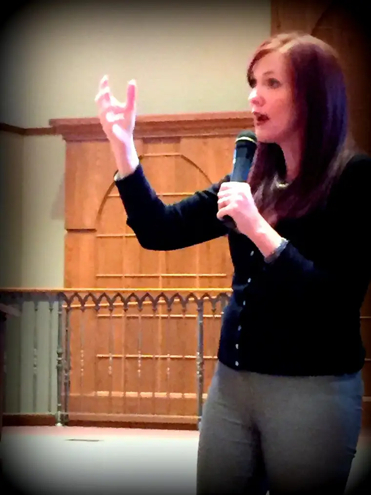

O

n Monday, I had lunch with Jennifer Fulwiler, an atheist convert to Christianity, and a group of other Christians who’d come to hear her midday presentation.Author of the popular Christian blog “Conversion Diary,” Jennifer came to Fargo firstly to headline an evening radio fundraiser and offer insights about her journey from secularism to belief in God.
Jennifer’s blog and book, “Something Other Than God,” detail a lot of her conversion, but at the earlier event, she focused on how the life issue affected her embrace of Christianity.
A few weeks earlier, I’d conversed with an escort in downtown Fargo at our state’s only abortion facility. A self-described atheist, he promised to tear me to shreds if I tried to dialogue with him about abortion.
But the shredding never happened. Somehow, grace entered the sidewalk, and instead of having a furious and futile debate, we calmly shared our views.
At first, I wasn’t sure it was possible. In my reaching out to a young woman entering the facility with a pamphlet directing her to help and support, the escort scoffed.
“She’s already made her decision,” he said. “You’re not going to change it.”
“But can’t we offer hope?” I countered. “What are we without hope?”
“You can take your monster of a God elsewhere,” he said.
I told him that, thankfully, the God I believe in is no monster but love itself, explaining that my faith simply backs up what I already believe because I am first human, and that pro-life secularists exist.
I thought again about our conversation, which ended peacefully, as Jennifer shared how she’d become pro-life after spending her life before then as a staunchly pro-choice atheist.
She clarified that as an atheist, she never would have advocated killing babies, and took great offense when pro-lifers suggested that being pro-choice meant endorsing infant murder.
She was, however, OK with killing a subhuman fetus that had been created at an inconvenient time.
But a problem with her reasoning began to arise. Jennifer said she noticed over time that the bar she and others had set to define “human” kept moving with scientific advancement.
She buckled when a pro-lifer challenged her: “At some point, it becomes a baby. When does the shift happen?”
Jennifer said she couldn’t answer, but one of her college professors, also an atheist, said that the humanness of something is relative to its cognitive ability, and she agreed.
Then one day during a lecture, the same professor argued that it is more ethical to kill a newborn baby than an adult pig, since the latter is more cognitively advanced.
“Based on purely atheistic reasoning, I knew he was right,” Jennifer said. Yet this unsettled her.
Later, Jennifer married and soon became pregnant with their firstborn son. When she saw his little arms moving about on the ultrasound image, and even him urinating in utero, she remarked to her husband, stunned, “That looks an awful lot like a baby.”
Science and her observations of reality were bringing about new vision, she said.
It also bothered her that women who enter abortion facilities receive only limited information, she said, noting that the majority never even talk to an actual medical doctor before the procedure.
As a young girl, Jennifer’s atheist father had taught her to always seek truth and that information brings about truth, so why the lack of full disclosure?, she wondered.
Jennifer said she began to question how she was any different in her pro-choice convictions than those individuals during lawful slavery and World War II who supported unfair treatment of the human person. Like them, she’d allowed herself to dehumanize the human to justify ill treatment and even murder.
“Our society has to choose between these two competing ‘truths’: that sex doesn’t have life-changing consequences, and life begins at conception,” she concluded. “Both cannot exist together.”
Abortion keeps the first in circulation even though it’s actually a myth, she said. If we can “quickly get rid of the problem,” consequences disappear — or so it seems.
But in choosing the real truth, she said, we must necessarily embrace “a theology of sacrifice”; a way of life that, though not always easy, always brings about true fulfillment.
This is a harder concept for our current society to grasp, she added, and takes the witness and evangelization of the faithful to bring it forth, through love.
Leaving the church where Jennifer talked, I felt grateful: for the points at which atheists — like the escort — and faithful can converge; for those who present all information to the abortion-vulnerable; and for people like Jennifer, who despite the human tendency toward pride, have humbled themselves to walk in the light of truth and love.
[For the sake of having a repository for my newspaper columns and articles, I reprint them here, with permission, a week after their run date. The preceding ran in The Forum newspaper on March 5, 2016.]